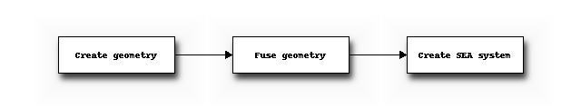

Tutorial
The previous chapter showed how Statistical Energy Analysis is implemented in SeaPy.
In this chapter we will have a look at how to create an SEA model using the graphical user interfance as well as through the Python interpreter.
Additionally several examples will be shown.
Creating an SEA model
An SEA model can be made using both the graphical user interface as well as through a Python interpreter, either FreeCAD’s internal or an external one.
Using the GUI
In FreeCAD-SEA an SEA model can be made by taking the following steps:
- Create a geometry in the Part workbench.
- Merge the geometry into a single Fusion using Usion.
- Switch to the SEA workbench
- Add an SEA system and optionally build the system from the geometry.

Using the Python interpreter
Examples
Now follow several examples.
Beams
Let’s assume that we have two connected beams, and that we only have longitudinal waves in the components.
The model would be then be the same as was just shown before.
The following code shows how such a model can be created.